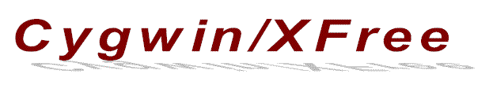

-
-
Last updated October 3, 1999
What is it?
It was my personal idea, to port XFree86,
the
free and optimized X11R6 implementation to Windows 9x/NT. Later
Chris Faylor, Manager Win32, Cygnus Solutions, provided resources by offering
access to Cygnus'
Sourceware Server and cygwin-xfree
mailing list. XFree86 source code and patches for Cygwin are available
via FTP from ftp://sourceware.cygnus.com/pub/cygwin/xfree.
One aspect of this project is to port XFree86 to Windows, using Cygwin
B20.1. Few years ago, it would not have been feasible to compile XFree86
on Windows. Cygwin B20.1 makes it possible.
John Fortin later joined Cygwin-xfree
project. He is working on porting GGI
(General Graphical Interface), and DirectX. He plans to use XGGI as
a full-screen X-server.
XFree86 is not just yet another program, it is an entire window
management environment, that usually runs in Unix environments. We are
talking about 100MB of source code, much of which highly hardware dependent,
e.g. the X Servers which access the video hardware of the PC directly.
What is Cygwin-XFree?
Cygwin-XFree is the nickname of Xfree86 to Cygwin porting project.
What is the status?
Following the approaches Holger Veit took for OS/2, XFree86 source code
had been patched. It compiles without problems using Cygwin
B20.1 and GCC-2.95.
Please read "Resource Requirements" for details.
The X-servers are not functional yet. We need to port Holger
Veit’s XF86SUP.SYS driver for OS/2 to Windows. XF86SUP.SYS driver provides
access to I/O ports and mapping of video cards physical memory to a user
area, known as /dev/mem and /dev/iopl on some UNIX. XFree86 servers need
these features.
List of archives
-
By default, the URL points to the Sourceware
FTP server. It contains XFree86 source code patched for Cygwin B20.1
and pre compiled libraries and clients. Note: as mentioned above, X-server
executable are not functional yet.
How can I help?
You can help by porting Holger Veit’s XF86SUP.SYS
driver (XFree86/OS2 support driver) to Windows. It should be compiled using
MSVC or MingW32 for performance reasons. This driver is need to provide
/dev/mmap and /dev/iopl features missing on Windows 9x/NT.
Since the patched source is available, you might consider recompiling
the code yourself (Consult Resource Requirements below) and fix bugs and
improve certain parts. Before you start reinventing wheels that might turn
out making the system incompatible, please contact me before doing so.
I'll be available as the mediator between XFree86/Cygwin and general XFree86.
If you are the first to help port XFree86 to Windows, you will be mentioned
on the list!
Which are the available information channels?
There is a mailing
list for XFree86/Cygwin porting project, with full text search of the
mailing list archive.
Resource requirements?
-
Hardware:
-
486, Pentium or PPro system with at least 16 MB main memory
-
To recompile from scratch, 300 MB free space on your hard disk. The
system requires a file systems, for example FAT32 and NTFS, which support
long filenames.
-
Software and Compilation:
-
Windows 9x/NT 4.0. or Windows 2000.
-
Cygwin B20.1. (A latest Cygwin
Development Snapshot is preferred due to improved socket functions).
-
Download xc-1 to xc-3.tar.bz2 from ftp://sourceware.cygnus.com/pub/cygwin/xfree
or the cygwin-xfree-diff.tar.bz2
if you already have XFree86 3.3.5 code base from
XFree86.org.
-
Please mount Cygwin disk as binary before extracting and compiling XFree86
source code, i.e. umount / then mount -b c: /, otherwise most of the code
in xc/programs/Xserver will fail to compile and report "syntex" errors.
-
For network connectivity, you need Windows TCP/IP installed
-
EGCS
1.1.2 or GCC 2.95 for Cygwin
-
libcrypt to
compile xdm security features.
-
You may also need Patch.exe.
When applying 3 to 6 MB patch file, patch.exe that comes with Cygwin did
core dump. I ported GNU patch source code to Microsoft VC.
Developers participating in this project:
A few developers responded to my post at comp.os.windows.programmers.
I have been communicating with them. As soon as they start volunteering,
I will list their name here.
Acknowledgments:
Mumit Khan deserves many
thanks for his work with GCC, without it would have been a very difficult
task to compile XFree86 on Windows.
Thanks to Sergey Orkhapin
for his initial work on X11R6.4, which helped a great deal.
Chris Faylor for providing access
to Sourceware Server, which allowed to exchange code base and patches with
other developers.
Many more names may be listed here as we make progress.
Please send Cygwin-XFree related questions and observations to the Cygwin-xfree
Mailing List.
Please send news, announcements, and technical problems (bad html, broken
links) concerning these web pages to the web
page maintainer. All other mail concerning this web server or ftp server
should go to the SourceMaster.
Copyright © 1999 Cygnus Solutions